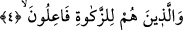
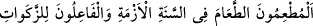
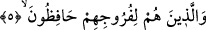

Yâni bütün vakitlerinde yüz çevirirler. Elbette namazla meşgul olduklarında onu terk
etmeleri öncelikle buna dâhildir. Mü’minlerin boş ve faydasız şeylerden uzak
durmalarının sebebi, onlardan yüz çevirmeyi gerektirecek hâlin bulunmasıdır. Yoksa bu,
sadece dînî konularda ciddiyetle meşgul olmak için değildir. Çünkü eğer öyle olsaydı
bu, bizzat boş ve faydasız şeylerde onları yapmaktan kendilerini alıkoyacak bir şey
bulunmadığını vehmettirebilirdi.
4. Onlar ki, zekâtı verirler;
Zekâtı/sadakayı edâ ederler. Edâ etmenin “fiil” ile ifâde edilmesinin Arap kelâmında
yeri
vardır.
Ümeyye
b.
Ebi’s-Salt
şöyle
demiştir:
“__WORD__ Kıtlık senesinde yemek yedirenler ve
sadakaları edâ edenler.”
Âyette bedenle ve malla yapılan tâatlar arasında boş ve faydasız şeylerden yüz
çevirmekten bahsedilmesi, onun namazda huşû ile münâsebetinin kemâl üzere olması
sebebiyledir.
et-Te’vîlâtü’n-Necmiyye’de der ki: “İşâret etmektedir ki zekât ancak nefsi dünya
sevgisi ve diğer kötü ve pis sıfatlardan tezkiye edip temizlemek için vâcib kılınmıştır.
Nitekim Allah Teâlâ şöyle buyurmuştur: “Onların mallarından sadaka al; bununla
onları (günahlardan) temizlersin, onları arıtıp yüceltirsin.” (et-Tevbe, /103)
Şüphesiz kurtuluş nefsin tezkiyesindedir. Nitekim Allah Teâlâ: “Doğrusu
felaha/kurtuluşa ermiştir temizlenen.” (el-A‘lâ, 87/14), “Nefsini kötülüklerden
arındıran kurtuluşa ermiştir, Onu kötülüklere gömen de ziyan etmiştir.” (eş-Şems,
91/9-10) Maksad sevgisi kalbdeyken sadece malı vermek değildir. Esas maksad dünya
sevgisini kalbden izâle etmektir. Çünkü dünya sevgisi her hatânın başıdır. Bu maslahat
ise ancak zekâtı yerine getirmekle hâsıl olur. Zekât ise nefsini ve kalbini dünya
sevgisinden ve bütün kötü sıfatlardan tezkiye edecek şeyleri yapmaktır. Bu ise onların
izâle edilmesi tamam olana kadar devam eder.
5. Ve onlar ki, iffetlerini korurlar;
Irzlarını, edeb yerlerini haramdan tutarlar, serbest bırakmazlar ve ayak altına
almazlar.